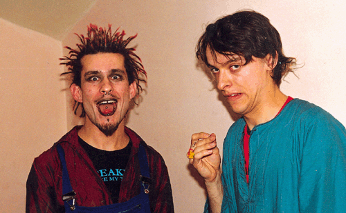

Милые
Дамы и Добрые Господа!
Уважаемые посетители ВВВ!
Вас приветствует ведущий ПГ-Новостей
Александр Буратино и его дрессированные
тараканы!

ПушкинГ,
24 октября, с.г. Виталик (Снижение Вреда Без
Границ) во время своей акции Razaalak: Bombs in Moscow. В
зеленом - альт.ред. ПГ А.Дельфин (Буратино).
СКОРО ГОД, КАК СУЩЕСТВУЕТ ПГ. Мы собрались,
как группа отпетых детей мегаполиса, в прошлом
ноябре. Бросились в омут альтернативных
поползновений. Каждый преследовал свои цели:
бабло, популярность, успех среди красивых женщин.
Мы выпустили беспрецедентный
"постглянцевый" журнал, набитый космосом,
артом, сексом, священным дабом, руганью,
комплексами, зеленым чаем, говном. Провели
множество клубных патти. Выпустили вагонетку
дичайшей полиграфии. Испытали галлюцинозы такой
мощности, которую не обеспечит ни один самый
ядерный психоделик. И все это закончилось
грандиозным Интернациональным Фестивалем
Позитивных Вибраций Пуш-Пуш Кинг-2, на который
приехал Mad Professor.
Можно подвести итоги, как это любят делать
политические комментаторы под конец недели.
Итогов, собственно, два. Ни у кого из участников
ПГ не появилось личного валютного счета. Слава
пришла в виде визитов участкового и кривых
усмешек хороших и добрых приятелей. Все красивые
женщины, с которыми мы были знакомы раньше,
бросили нас. Это первый итог.
Второй итог: в Сентябре состоялось открытие
Культурного Места ПушкинГ.
Ахронологичная хроника ПушкинГа.
3.9.99. Техническое открытие. В панике мы
метались по городу, закупая продукты и собирая в
долг необходимую аппаратуру. Пришло много людей.
Звучала музыка даб, реггей и прочий руутс. Все
пили зеленый чай, удивленно ели сладости и
ошеломленно молчали. Хотя нет - все орали так, что
я сбежал из ПушкинГа.
5.9.99. Афтерпатти Пуш-Пуш Кинг-2. Фестиваль в
Нескушном саду закончился в начале двенадцатого
добрым Mad Professor Dub Show. И некоторые участники
фестика, а также близкие друзья плюс пара-тройка
левых личностей да засланных соглядатаев упали в
ПушкинГ. Всю ночь вибрировали эстонские П/Г Тарви
Лааманн и Ринго Рингвее. Первый уважает
раггамуффин, второй - даб. У них коллекция
удивительного винила прямо с Ямайки. Парни имеют
возможность очень дешево летать по планете на
самолетах эстонских авиалиний. Они проработали
на Джамайке недели три, потом - в ПушкинГ.
Афтерпатти прошло как танк, а эстонцы зависли и
жили у нас еще года три, по-моему. Да, точно, они
уехали домой в 2003.
25.10.99. Открытие по полной программе. Зажигали
дабом "Карибасы", веселился и ликовал весь
народ, заходила даже Татьяна Дьяченко с
Волошиным, но ненадолго.
Вскоре после этого.
Наш друг из Берлина, известный московский
концептуалист и любитель реггей Илья Китуп
выступил в Культурном Месте с удивительной
программой "Стихи, рассказы, балет". Слушали
его внимательно, с любовью. Если учесть, что
граждане у нас собираются нетипичные для
прогнившей московской арт-тусовки, то это тем
более интересно."Нет, Китуп, ты не туп", -
сказали после вечера сотрудники ПГ, перефразируя
шутливый экспромт А/Х Александра Мареева.
В ПушкинГе Проигрывали Грампластинки П/Г Иван
Поляков, Андрей Чагин, Василий Би-Войс.
Отрабатывал по полной П/Г Юра МОНО. Открытием
закрытого места стал молодой человек по имени
Василий, променявший семь лет в Лондоне на
ПушкинГ. Владыка беспрецедентной музыки, П/Г
Василий заслужил всеобщее почтение. Следите за
рекламой! Ждите знакомства с Василием на
страницах ПГ-2 и на ВВВ!
9.10.99. Группа Моно&Исай. На басу бубухал
Паулюс, на перкуссии зажигали Павэл и
Холодильник. Я кричал: "Пора танцевать,
молодые!" - и падал на пол, как брейкденсер.
Особой благосклонностью молодежи
воспользовалась кавер-версия песни Виктора Цоя
"Бошетунмай".
10.9.99. Около 23.00 к нам приехал А/Х & Псих/По
Павел Пепперштейн. До самого конца не было ясно,
пройдут ли намеченные чтения. Паша живет ныне в
Тель-Авиве, в Москве появился как луч света в
темном царстве, его разрывали на части юные
поклонницы. Но все же он решился и выступил перед
наполовину незнакомой публикой. Паша отказался
выключать свет, пригрозил, что будет читать очень
тихо. Вкрадчивый, завораживающий голос
Пепперштейна ("Голос из китайского
ресторана") сорвал башню посетителям
Культурного Места.
Было много еще интересного, но мне надоело
писать.
Итоги
Вот поле, на котором ни цветка, ни травинки.
Вот дети играют без рук, без ног.
Вот книжка без слов и без единой картинки.
Дорогая мама, таков итог.
Вот камень, забывший о постоянстве.
Вот лошадь чешет единственный бок.
Вот подводная лодка в безвоздушном пространстве.
Дорогая мама, таков итог.
Вот письмо без адреса, доставленное в больницу.
Вот государство, упрятанное в свисток.
Вот вечные пионеры без конца играют в
"Зарницу".
Дорогая мама, таков итог.
Вот поцелуи, приклеенные на пленку,
Вот Запад, взобравшийся верхом на Восток.
Вот песик, приросший хвостом к котенку.
Дорогая мама, таков итог.
Следите за Позитивными Вибрациями Голоса ПГ!
Ждите новых сообщений!
Ваш альтернативный редактор А.Буратино.
Пишите нам письма!
|